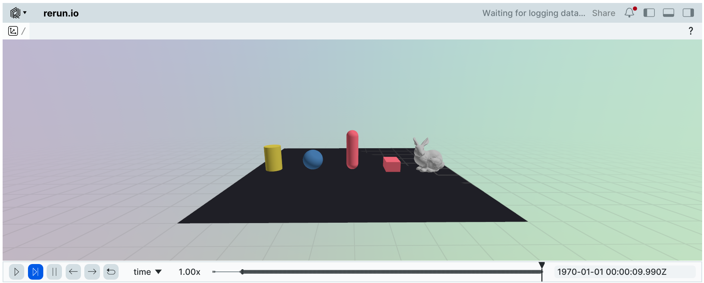

Visualization#
Newton provides multiple viewer backends for different visualization needs, from real-time rendering to offline recording and external integrations.
Common Interface#
All viewer backends inherit from ViewerBase and share a common interface:
Core loop methods — every viewer uses the same simulation loop pattern:
set_model()— assign aModeland optionally limit the number of rendered worlds withmax_worldsbegin_frame()— start a new frame with the current simulation timelog_state()— update the viewer with the currentState(body transforms, particle positions, etc.)end_frame()— finish the frame and present itis_running()— check whether the viewer is still open (useful as a loop condition)is_paused()— check whether the simulation is paused (toggled withSPACEinViewerGL)close()— close the viewer and release resources
Camera and layout:
set_camera()— set camera position, pitch, and yawset_world_offsets()— arrange multiple worlds in a grid with a given spacing along each axis
Custom visualization — draw debug overlays on top of the simulation:
log_lines()— draw line segments (e.g. rays, normals, force vectors)log_points()— draw a point cloud (e.g. contact locations, particle positions)log_contacts()— visualizeContactsas normal lines at contact pointslog_gizmo()— display a transform gizmo (position + orientation axes)log_scalar()/log_array()— log numeric data for backend-specific visualization (e.g. time-series plots in Rerun)
Limiting rendered worlds: When training with many parallel environments, rendering all worlds can impact performance.
All viewers support the max_worlds parameter to limit visualization to a subset of environments:
builder = newton.ModelBuilder()
body = builder.add_body(mass=1.0)
model = builder.finalize()
# Only render the first 4 environments
viewer = newton.viewer.ViewerNull()
viewer.set_model(model, max_worlds=4)
Real-time Viewers#
OpenGL Viewer#
Newton provides ViewerGL, a simple OpenGL viewer for interactive real-time visualization of simulations.
The viewer requires pyglet (version >= 2.1.6) and imgui_bundle (version >= 1.92.0) to be installed.
Constructor parameters:
width: Window width in pixels (default:1920)height: Window height in pixels (default:1080)vsync: Enable vertical sync (default:False)headless: Run without a visible window, useful for off-screen rendering (default:False)
viewer = newton.viewer.ViewerGL()
viewer.set_model(model)
# at every frame:
viewer.begin_frame(sim_time)
viewer.log_state(state)
viewer.end_frame()
# check if the simulation is paused (toggled with SPACE key):
if viewer.is_paused():
pass # simulation stepping is paused
Interactive forces and input:
apply_forces() applies viewer-driven forces (object picking with right-click, wind) to the simulation state.
Call it each frame before stepping the solver:
viewer.apply_forces(state)
solver.step(model, state, ...)
is_key_down() queries whether a key is currently pressed.
Keys can be specified as single-character strings ('w'), special key names ('space', 'escape'), or pyglet key constants:
if viewer.is_key_down('r'):
state = model.state() # reset
Headless mode and frame capture:
In headless mode (headless=True), the viewer renders off-screen without opening a window.
Use get_frame() to retrieve the rendered image as a GPU array:
viewer = newton.viewer.ViewerGL(headless=True)
viewer.set_model(model)
viewer.begin_frame(sim_time)
viewer.log_state(state)
viewer.end_frame()
# Returns a wp.array with shape (height, width, 3), dtype wp.uint8
frame = viewer.get_frame()
Custom UI panels:
register_ui_callback() adds custom imgui UI elements to the viewer.
The position parameter controls placement: "side" (default), "stats", "free", or "panel":
def my_ui(ui):
import imgui_bundle.imgui as imgui
imgui.text("Hello from custom UI!")
viewer.register_ui_callback(my_ui, position="side")
Keyboard shortcuts when working with the OpenGL Viewer:
Key(s) |
Description |
|---|---|
|
Move the camera like in a FPS game |
|
Toggle Sidebar |
|
Pause/continue the simulation |
|
Pick objects |
Troubleshooting:
If you encounter an OpenGL context error on Linux with Wayland:
OpenGL.error.Error: Attempt to retrieve context when no valid context
Set the PyOpenGL platform before running:
export PYOPENGL_PLATFORM=glx
This is a known issue when running OpenGL applications on Wayland display servers.
Recording and Offline Viewers#
Recording to File (ViewerFile)#
The ViewerFile backend records simulation data to JSON or binary files for later replay or analysis.
This is useful for capturing simulations for debugging, sharing results, or post-processing.
File formats:
.json: Human-readable JSON format (no additional dependencies).bin: Binary CBOR2 format (more efficient, requirescbor2package)
To use binary format, install the optional dependency:
pip install cbor2
Recording a simulation:
import tempfile, os
builder = newton.ModelBuilder()
body = builder.add_body(mass=1.0)
model = builder.finalize()
state = model.state()
# Record to JSON format (human-readable, no extra dependencies)
output_path = os.path.join(tempfile.mkdtemp(), "simulation.json")
viewer = newton.viewer.ViewerFile(output_path)
viewer.set_model(model)
sim_time = 0.0
for _ in range(5):
viewer.begin_frame(sim_time)
viewer.log_state(state)
viewer.end_frame()
sim_time += 1.0 / 60.0
# Close to save the recording
viewer.close()
...
Loading and playing back recordings:
Use ViewerFile to load a recording, then restore the model and state for a given frame. Use ViewerGL (or another rendering viewer) to visualize.
# Load a recording for playback
viewer_file = newton.viewer.ViewerFile(output_path)
viewer_file.load_recording()
# Restore the model and state from the recording
model = newton.Model()
viewer_file.load_model(model)
print(f"Frames: {viewer_file.get_frame_count()}")
state = model.state()
viewer_file.load_state(state, frame_id=0) # frame index in [0, get_frame_count())
Frames: 5
For a complete example with UI controls for scrubbing and playback, see newton/examples/basic/example_replay_viewer.py.
Key parameters:
output_path: Path to the output file (format determined by extension: .json or .bin)auto_save: If True, automatically save periodically during recording (default:True)save_interval: Number of frames between auto-saves when auto_save=True (default:100)max_history_size: Maximum number of frames to keep in memory (default:Nonefor unlimited)
Rendering to USD#
Instead of rendering in real-time, you can also render the simulation as a time-sampled USD stage to be visualized in Omniverse or other USD-compatible tools using the ViewerUSD backend.
Constructor parameters:
output_path: Path to the output USD filefps: Frames per second for time sampling (default:60)up_axis: USD up axis,"Y"or"Z"(default:"Z")num_frames: Maximum number of frames to record, orNonefor unlimited (default:100)scaling: Uniform scaling applied to the scene root (default:1.0)
viewer = newton.viewer.ViewerUSD(output_path="simulation.usd", fps=60, up_axis="Z")
viewer.set_model(model)
# at every frame:
viewer.begin_frame(sim_time)
viewer.log_state(state)
viewer.end_frame()
# Save and close the USD file
viewer.close()
External Integrations#
Rerun Viewer#
The ViewerRerun backend integrates with the rerun visualization library,
enabling real-time or offline visualization with advanced features like time scrubbing and data inspection.
Installation: Requires the rerun-sdk package:
pip install rerun-sdk
Constructor parameters:
app_id: Application ID for Rerun (default:"newton-viewer"). Use different IDs to differentiate between parallel viewer instances.address: Optional server address to connect to a remote Rerun server. If provided, connects to the specified server.serve_web_viewer: Serve a web viewer over HTTP and open it in the browser (default:True). IfFalse, spawns a native Rerun viewer.web_port: Port for the web viewer (default:9090)grpc_port: Port for the gRPC server (default:9876)keep_historical_data: Keep historical state data in the viewer for time scrubbing (default:False)keep_scalar_history: Keep scalar time-series history (default:True)record_to_rrd: Optional path to save a.rrdrecording file
Usage:
# Default usage: spawns a local viewer
viewer = newton.viewer.ViewerRerun(
app_id="newton-simulation"
)
# Or specify a custom server address for remote viewing
viewer = newton.viewer.ViewerRerun(
address="rerun+http://127.0.0.1:9876/proxy",
app_id="newton-simulation"
)
viewer.set_model(model)
# at every frame:
viewer.begin_frame(sim_time)
viewer.log_state(state)
viewer.end_frame()
By default, the viewer will run without keeping historical state data in the viewer to keep the memory usage constant when sending transform updates via ViewerRerun.log_state().
This is useful for visualizing long and complex simulations that would quickly fill up the web viewer’s memory if the historical data was kept.
If you want to keep the historical state data in the viewer, you can set the keep_historical_data flag to True.
The rerun viewer provides a web-based interface with features like:
Time scrubbing and playback controls
3D scene navigation
Data inspection and filtering
Recording and export capabilities
Jupyter notebook support
The ViewerRerun backend automatically detects if it is running inside a Jupyter notebook environment and automatically generates an output widget for the viewer
during the construction of ViewerRerun.
The rerun SDK provides a Jupyter notebook extension that allows you to visualize rerun data in a Jupyter notebook.
You can use uv to start Jupyter lab with the required dependencies (or install the extension manually with pip install rerun-sdk[notebook]):
uv run --extra notebook jupyter lab
Then, you can use the rerun SDK in a Jupyter notebook by importing the rerun module and creating a viewer instance.
viewer = newton.viewer.ViewerRerun(keep_historical_data=True)
viewer.set_model(model)
frame_dt = 1 / 60.0
sim_time = 0.0
for frame in range(500):
# simulate, step the solver, etc.
solver.step(...)
# visualize
viewer.begin_frame(sim_time)
viewer.log_state(state)
viewer.end_frame()
sim_time += frame_dt
viewer.show_notebook() # or simply `viewer` to display the viewer in the notebook
{kind=link}

The history of states will be available in the viewer to scrub through the simulation timeline.
Viser Viewer#
The ViewerViser backend integrates with the viser visualization library,
providing web-based 3D visualization that works in any browser and has native Jupyter notebook support.
Installation: Requires the viser package:
pip install viser
Usage:
# Default usage: starts a web server on port 8080
viewer = newton.viewer.ViewerViser(port=8080)
# Open http://localhost:8080 in your browser to view the simulation
viewer.set_model(model)
# at every frame:
viewer.begin_frame(sim_time)
viewer.log_state(state)
viewer.end_frame()
# Close the viewer when done
viewer.close()
Key parameters:
port: Port number for the web server (default:8080)label: Optional label for the browser window titleverbose: If True, print the server URL when starting (default:True)share: If True, create a publicly accessible URL via viser’s share featurerecord_to_viser: Path to record the visualization to a.viserfile for later playback
Recording and playback
ViewerViser can record simulations to .viser files for later playback:
# Record to a .viser file
viewer = newton.viewer.ViewerViser(record_to_viser="my_simulation.viser")
viewer.set_model(model)
# Run simulation...
for frame in range(500):
viewer.begin_frame(sim_time)
viewer.log_state(state)
viewer.end_frame()
sim_time += frame_dt
# Save the recording
viewer.save_recording()
The recorded .viser file can be played back using the viser HTML player.
Jupyter notebook support
ViewerViser has native Jupyter notebook integration. When recording is enabled, calling show_notebook()
will display an embedded player with timeline controls:
viewer = newton.viewer.ViewerViser(record_to_viser="simulation.viser")
viewer.set_model(model)
# Run simulation...
for frame in range(500):
viewer.begin_frame(sim_time)
viewer.log_state(state)
viewer.end_frame()
sim_time += frame_dt
# Display in notebook with timeline controls
viewer.show_notebook() # or simply `viewer` at the end of a cell
When no recording is active, show_notebook() displays the live server in an IFrame.
The viser viewer provides features like:
Real-time 3D visualization in any web browser
Interactive camera controls (pan, zoom, orbit)
GPU-accelerated batched mesh rendering
Recording and playback capabilities
Public URL sharing via viser’s share feature
Utility Viewers#
Null Viewer#
The ViewerNull provides a no-operation viewer for headless environments or automated testing where visualization is not required.
It simply counts frames and provides stub implementations for all viewer methods.
builder = newton.ModelBuilder()
body = builder.add_body(mass=1.0)
model = builder.finalize()
state = model.state()
sim_time = 0.0
viewer = newton.viewer.ViewerNull(num_frames=10)
viewer.set_model(model)
while viewer.is_running():
viewer.begin_frame(sim_time)
viewer.log_state(state)
viewer.end_frame()
sim_time += 1.0 / 60.0
print(f"Ran {viewer.frame_count} frames")
Ran 10 frames
This is particularly useful for:
Performance benchmarking without rendering overhead
Automated testing in CI/CD pipelines
Running simulations on headless servers
Batch processing of simulations
Custom Visualization#
In addition to rendering simulation state with log_state(), you can draw custom debug overlays using the log_* methods available on all viewers.
Drawing lines:
Use log_lines() to draw line segments — useful for visualizing forces, rays, or normals:
# Draw force vectors at body positions
viewer.log_lines(
"/debug/forces",
starts=positions, # wp.array(dtype=wp.vec3)
ends=positions + forces, # wp.array(dtype=wp.vec3)
colors=(1.0, 0.0, 0.0), # red
width=0.005,
)
Drawing points:
Use log_points() to draw a point cloud:
viewer.log_points(
"/debug/targets",
points=target_positions, # wp.array(dtype=wp.vec3)
radii=0.02, # uniform radius, or wp.array(dtype=wp.float32)
colors=(0.0, 1.0, 0.0), # green
)
Visualizing contacts:
Use log_contacts() to draw contact normals from a Contacts object.
The viewer’s show_contacts flag (toggled in the ViewerGL sidebar) controls visibility:
viewer.log_contacts(contacts, state)
Transform gizmos:
Use log_gizmo() to display a coordinate-frame gizmo at a given transform:
viewer.log_gizmo("/debug/target_frame", wp.transform(pos, rot))
Camera and world layout:
Set the camera programmatically with set_camera():
viewer.set_camera(pos=wp.vec3(5.0, 2.0, 3.0), pitch=-0.3, yaw=0.5)
When visualizing multiple worlds, use set_world_offsets() to arrange them in a grid
(must be called after set_model()):
viewer.set_world_offsets(spacing=(5.0, 5.0, 0.0))
Choosing the Right Viewer#
Viewer |
Use Case |
Output |
Dependencies |
|---|---|---|---|
Interactive development and debugging |
Real-time display |
pyglet, imgui_bundle |
|
Recording for replay/sharing |
.json or .bin files |
None |
|
Integration with 3D pipelines |
.usd files |
usd-core |
|
Advanced visualization and analysis |
Web interface |
rerun-sdk |
|
Browser-based visualization and Jupyter notebooks |
Web interface, .viser files |
viser |
|
Headless/automated environments |
None |
None |